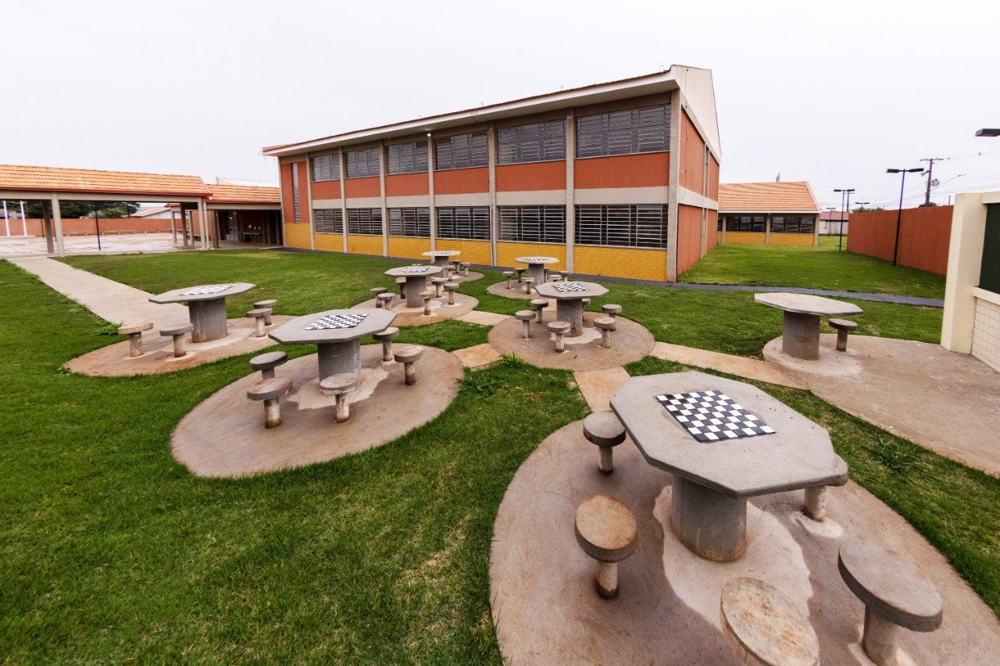

A Prefeitura de Arapongas anunciou a inauguração, nesta sexta-feira, 16, do Colégio Estadual localizado na região Sul da cidade. O local levará o nome da ex-vereadora e ex-deputada estadual Irondi Mantovani Pugliesi. O novo estabelecimento foi construído entre as Ruas Tanatau, Uru do Campo e Quete, ao lado do Pronto Atendimento 18 Horas Antônio J. Marques. Com 3,7 mil metros quadrados de área construída, o complexo educacional traz 20 salas de aula, área administrativa, biblioteca, laboratórios, sala ambiente, cozinha, refeitório, banheiros e ginásio com quadra poliesportiva. O investimento foi de R$ 5,7 milhões.
De acordo com o prefeito Sérgio Onofre, o colégio irá atender diversos bairros da região, além de facilitar o ingresso dos alunos no Ensino Médio. “Aqui, vamos atender estudantes que moram no Jardim Planalto, Casa da Família II, Conjunto São Bento e Conjunto Palmares, entre outros, que saem do ensino fundamental, mas passam a ser inseridos no ensino médio aqui mesmo. Isso amplia e facilita o acesso. A região Sul necessitava há muitos anos de um colégio estadual e agora este sonho se torna realidade”, disse Onofre.
A proposta da administração é de que o Colégio Estadual da Zona Sul também funcione com uma disciplina cívico-militar.
EQUIPAMENTO – Logo na fase de conclusão, o Colégio Estadual da Zona Sul Irondi Mantovani Pugliese já havia recebido o carregamento de 500 conjuntos de mobiliário escolar, compostos de mesas e cadeiras para os estudantes. No mesmo período, a instituição também já recebeu freezer, cadeiras e mesas para professores, mesas e bancos para refeitório, mesas para reuniões, mesas para sala de informática e utensílios de cozinha.
Saiba mais sobre Irondi Mantovani Pugliesi
Irondi Mantovani Pugliesi nasceu em 03/08/1947, no município de Apucarana/PR. Foi casada com o ex-prefeito de Arapongas e ex-deputado Waldyr Pugliesi, tendo três filhas: Márcia, Maitê e Cibele. Foi vereadora de Arapongas pelo MDB, de 1973 a 1977, sendo a primeira mulher eleita deputada estadual na história do Paraná pelo PMDB em dois mandatos: de 1983 a 1986 e de 1987 a 1990. No início da década de 1980, implantou o primeiro Conselho Estadual da Condição Feminina no Paraná, sendo sua 1ª presidente.
Integrou a comissão que elaborou o anteprojeto da criação do Conselho Nacional dos Direitos da Mulher, sendo sua representante no Paraná. Representou o Paraná na conferência promovida pela Organização das Nações Unidas (ONU), em Nairobi - Quênia (África), para avaliação da década da mulher, em 1985. Também representou o Estado no Congresso Nacional de Mulheres, promovido pela Federação Democrática Internacional de Mulheres em Moscou, em julho de 1987 e no 4º. Encontro Feminista Latino Americano e do Caribe, em 1987, no México.
